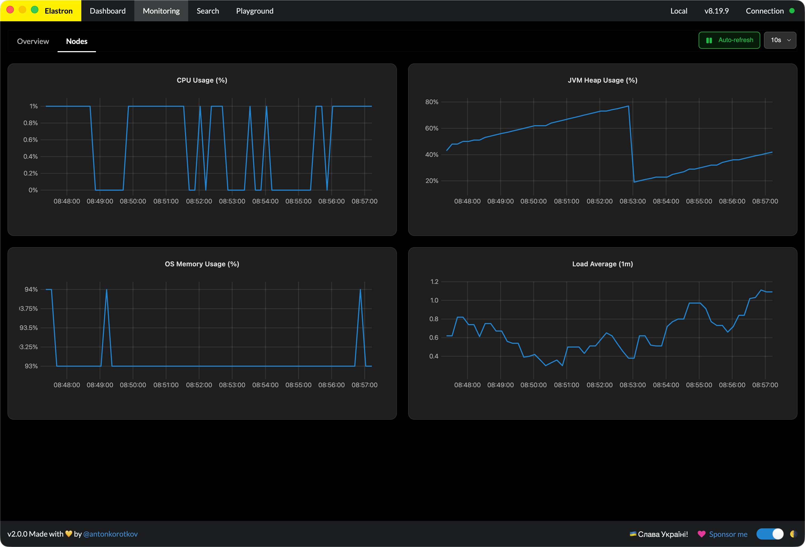
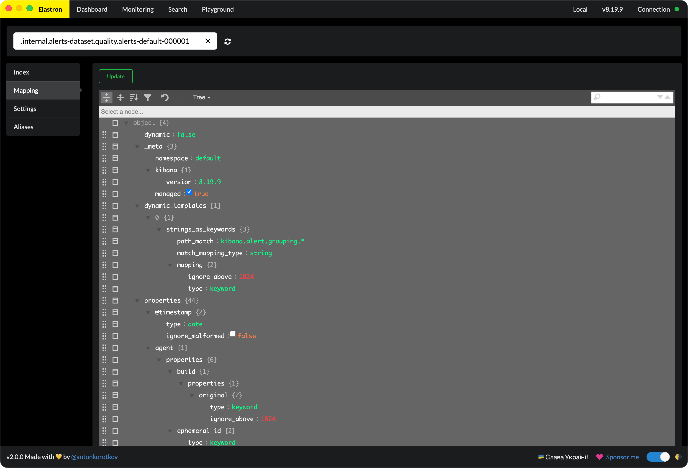

01 · Cluster monitoring
Health and performance at a glance.
Live health, node and shard layout, throughput, latency — laid out in one place. Spot trouble before it pages you.

A desktop GUI for Elasticsearch on macOS, Windows, and Linux. Free, open source, and built for engineers who'd rather not memorize the bulk API.
Cluster monitoring, indices, search, query profiling, an API playground — all in one native desktop app. No browser tab to lose, no curl to remember.
Live health, node and shard layout, throughput, latency — laid out in one place. Spot trouble before it pages you.

Compose complex queries with filters and aggregations. Inspect results, then explain or profile any query to find what's slow.
Edit mappings, browse and update documents, tweak settings — all without composing a single PUT.

A built-in playground for ad-hoc API calls. Method, path, body, headers — fire it, read the response, move on.
Built dark-first. Light mode if you must.
Open as many clusters side-by-side as you need. Each window is its own session — no juggling tabs, no losing context.
Short answers. If you have something that isn't here, open an issue.
Yes. Elastron is free and open source under the MIT license. There is no paid tier, no feature gate, no “PRO” version waiting in the wings. The full source lives on GitHub.
On a fresh install, macOS Gatekeeper may block the app. Right-click (or
Control-click) the Elastron icon in Applications and choose
Open, then confirm Open Anyway in the security dialog.
You only need to do this once. After that, Elastron launches normally.
No. Elastron talks directly to your cluster from your machine. Cluster contents, queries, and credentials never leave your network. The website uses Google Analytics for visit and download stats — no cluster data is involved.
Elasticsearch 8.x and 9.x.
For macOS, Windows, and Linux. Free, forever.